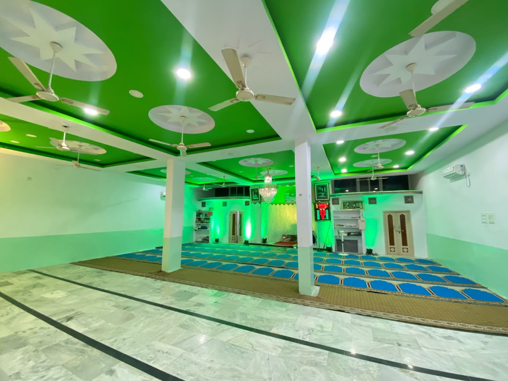

Record
Find the household, select the contribution month, and enter the payment date and amount.
Record contributions for Masjid E Shameem, check who has paid, and prepare the month’s report from your laptop.

Chanda Manager helps Masjid E Shameem treasurers keep each household’s monthly contributions in one place. Open a household to review its payments, or open a report to see the month’s totals.
Follow an entry from the household’s payment to the committee’s report.
Find the household, select the contribution month, and enter the payment date and amount.
Open Homes to see a household’s payment history. Use the monthly report to check who is still pending.
Review monthly or annual totals, then print the report or save it as a PDF.
Choose the method in Collect. The payment stays linked to the household and contribution month.
Use the laptop workspace when you need to review an entry, print a receipt, or prepare a report.
Open Homes, find the household, and select a payment. From the payment record, you can correct the entry or print the receipt.
Open Reports and choose a period. Monthly reports include payment records and pending households. Annual reports show monthly and household totals.
Open a report and select Print / Save PDF. Choose Save as PDF in your browser’s print dialog.
Use your existing administrator account to sign in to the laptop workspace. For mobile access, ask the Masjid E Shameem committee for an account and installation instructions.